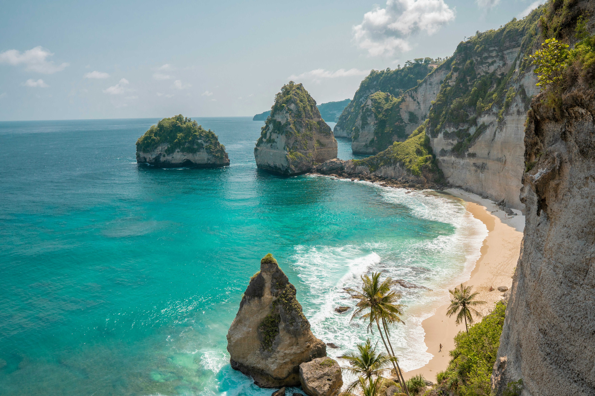
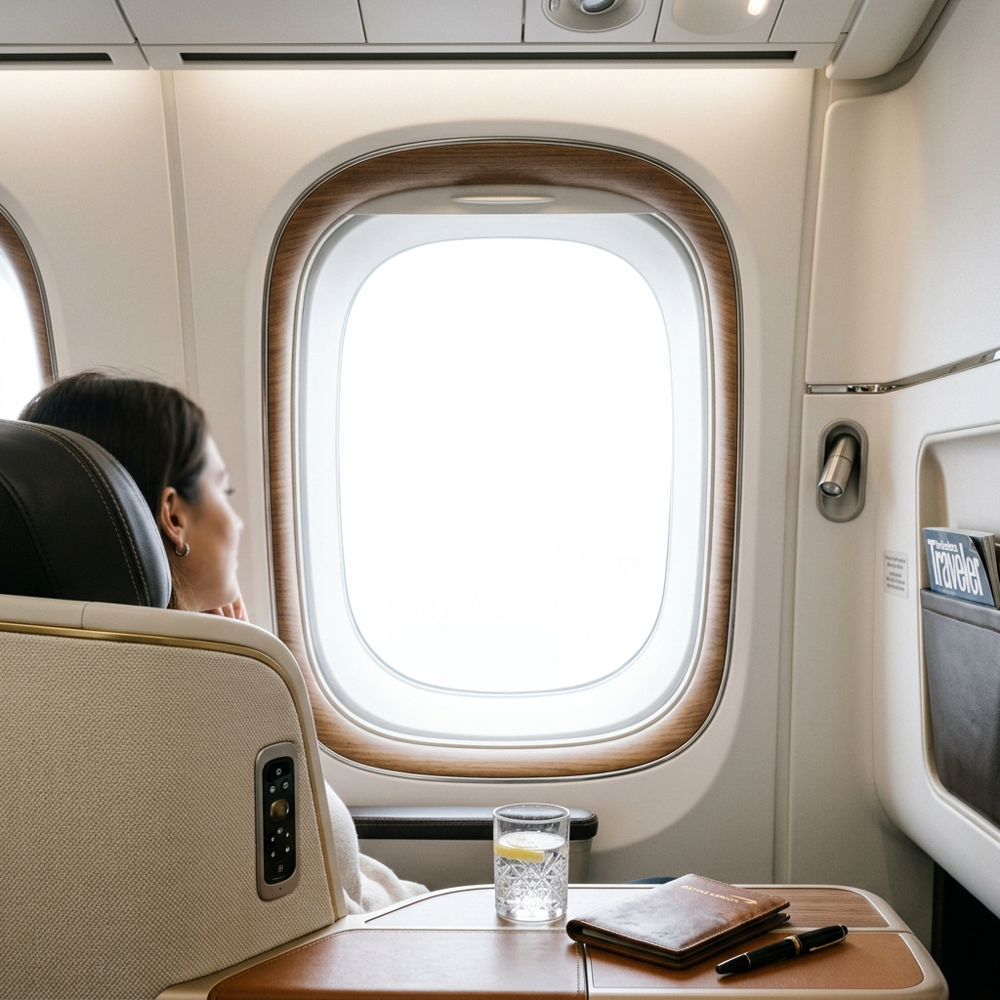

Tu agenda está llena, solucionas los problemas de todos, pero sientes que la vida simplemente te está pasando por encima en piloto automático.
Un fin de semana libre ya no te alcanza.
El cuerpo frena, pero tu mente sigue girando en los mismos patrones y miedos inconscientes de siempre.
Tu personalidad (tu Eneatipo) te salvó en el pasado, pero hoy te pesa y te aleja de tu Yo Verdadero. Sabes que estás operando desde la herida.
Lejos del ruido y las demandas de tu entorno.
Buscas un espacio de verdadera quietud espiritual para escuchar a tu alma con claridad.
Sabes que llegó el momento de dar el gran salto. Tienes un llamado interno que ya no puedes silenciar con distracciones diarias.
• Equilibrio | • Conexión | • Individuación
• Bienestar | • Purificación
BALI - OCTUBRE

Antes de que el avión despegue, hay pasos previos para preparar el alma.
Viernes 20 de Marzo | 8:30 a 10:00 hs
@lacomanda_tejeda (Luis de Tejeda 4230)
Con @noeliaoyola y @newtoursagency
Si crees que este es el momento de tu viaje del héroe, te esperamos en el desayuno.
Atención: Cupos Limitados
Déjanos la palabra BALI en comentarios o escríbenos por privado para enviarte toda la info y reservar tu lugar.
No te demores. Tu alma te está esperando.